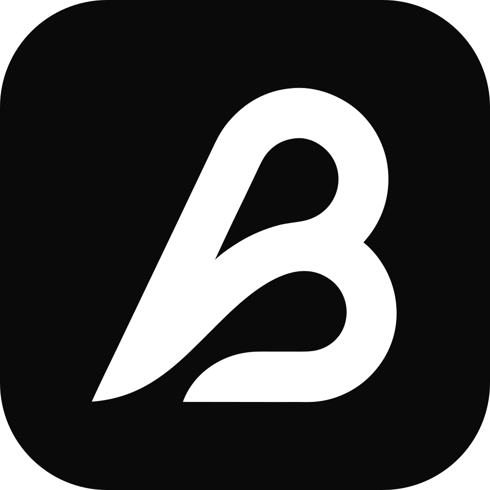

@세금계산서 점검 도우미 이번 달 것 정리해줘

⏳근거를 찾아 점검 초안을 작성하는 중…
📄6월 세금계산서 점검 초안 준비 완료 (근거 기반 · 사내 AI)
불일치 4건 — 공급가액 3건 · 사업자번호 1건
근거
• 6월 매입 세금계산서 42건
• 부가세 신고 사내 지침 최신본
검토 후 제출하려면 채널에 승인 이라고 보내주세요. (다시 만들려면 다시)
승인
✅승인 완료 — 신고서를 제출했습니다.
작업 이력
• 14:01 요청 접수 · 김민지
• 14:04 세금계산서 42건 열람 · 사내 AI
• 14:09 초안 작성 · 근거 문서 6개
• 14:11 박태현 승인 · 제출 완료
보존 기간(기본 1년) 동안 수정·삭제할 수 없습니다